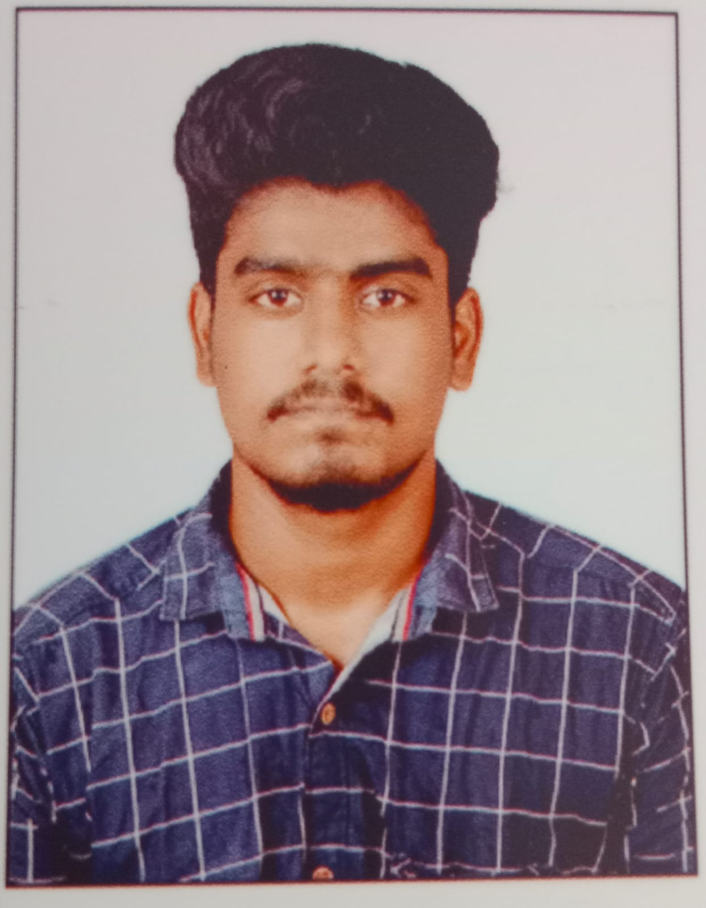

Yogaraj Sivakumar

Summary:
GIS analyst with excellent experience of ArcGIS, QGIS, and other software applications such as SNAP and Erdas
Imagine, as well as a good foundation in Python, Java, Postgresql, PostGIS, Interested in machine learning and artificial
intelligence for geospatial applications, and skilled at evaluating, visualizing, and resolving complex geographical
problems utilizing geospatial tools.
And I use the opportunity to learn about drone applications, as well as to explore
new capabilities in GIS packages.Strong communication abilities as well as a track record of successful cross-functional
team collaboration are required to create intelligent geospatial solutions. Proficient at utilizing Microsoft Excel for data
analysis and manipulation.
Education:
- Post Graduate Diploma in GeoInformtics(PGDGI), CDAC, Noida.
- Bachelors in GeoInformatics(BE), Anna University, Tuticorin.
Work Experience:
Sep,2022 - Present
- GIS Analyst- FarmwiseAI, Chennai.
- Perform geospatial data handling and analysis for agriculture and database management projects.
- Use advanced GIS tools, such as ArcGIS and QGIS, to build detailed maps and visualizations to improve project
deliverables.
- Analyze satellite data to inform environmental and resource management decisions.
- Create and automate data processing workflows in Python to enhance productivity and accuracy
- Create high-quality reports and presentations to effectively convey findings and inform decision-making.
- Manage geospatial databases to ensure data integrity and accessibility for team members and stakeholders.
Skills:
- QGIS
- ArcGIS
- GEE
- SNAP
- Python
- MS Office
- HTML
Award and Certifications:
- One day Workshop in GIS-An Open Source Platform - (22/01/2020 GLOINNT Solutions Pvt.Ltd.)
- Paper Presentation On " Post Cyclone Damage Assessment Of The Vegetation Cover Change In
Cauvery Delta Zone Caused By The Cyclone Gaja" - (13/02/2020 Dr. Sivanthi Aaditanar College,Thiruchendhur, Thoothukudi)
- 21 days Online GIS Training Program Using QGIS - 07/09/2020 – 27/09/2020 Department of Geography,School of Earth Sciences,Central University of Karnataka,India
Others:
My Contact
Hobbies